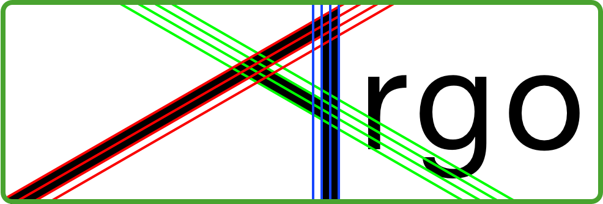

| Status: | Script loading... |
Backend Heartbeat:
server not contacted yet
Event: ||
unknown unknown (unknown)
unknown unknown (unknown)
Event Info
| Run | ? |
| SubRun | ? |
| Event | ? |
| Data Type | MC |
| Entry | ?/ |
| Date: |
 |
"U" View / View 0 / Plane 0
"V" View / View 1 / Plane 1
"Y" View / View 2 / Plane 2